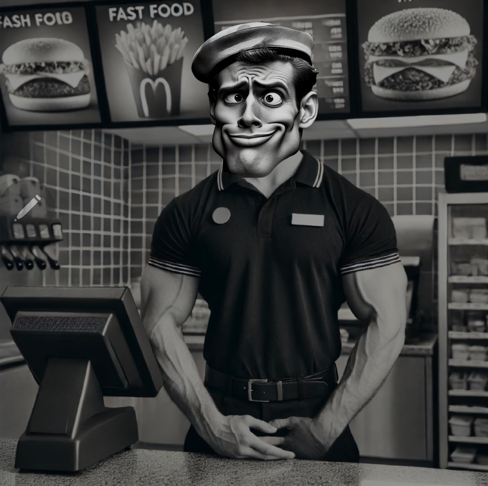
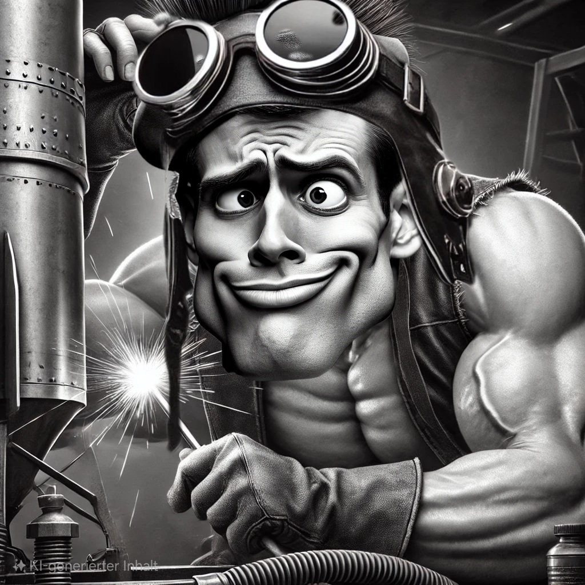

GIGALOST WAS CREATED WITH A CLEAR MISSION
to bring back the true essence of memecoins. Over the years, the crypto space has changed drastically,many memecoins have become nothing more than quick hype cycles pump-and-dump schemes, and empty promises. The original spirit, the fun, and the community that once made memecoins great, have slowly faded away. GigaLost is a response to this trend. There are no political agendas, no quick cash grabs, and no fake hype just a community that wants to laugh, dream, and build something meaningful together
“GIGA” is more than just an exaggeration—it represents unbreakable loyalty within the community the bond between brothers and sisters, and the desire to think big and aim high. Being part of GigaLost means understanding that it’s not just about the token itself it’s about what we can create together: a movement that goes beyond just memes
“LOST” embodies what memecoins have always been about: fun, humor, and a carefree atmosphere. In a world that often takes itself too seriously, there needs to be a space where everyone is equal where you don’t have to pretend, and where unfiltered joy is the priority. GigaLost is that place, a space where everyone is welcome to have a laugh and enjoy the ride 
GigaLost is not just another memecoin on Solana. It is a community-driven movement that aims to bring memecoins back to where they belong: at the heart of internet culture, viral trends, and an ecosystem fueled by real engagement
GigaLost is a statement against the modern crypto circus, where memecoins are often reduced to pure speculation. We are bringing back the golden days—when memecoins were fun, when memes were the most valuable currency, and when community mattered more than profit.
CA: F68zm93EeJbdjrYoooHMVRmLH1jRN12WDMsvrwuLpump